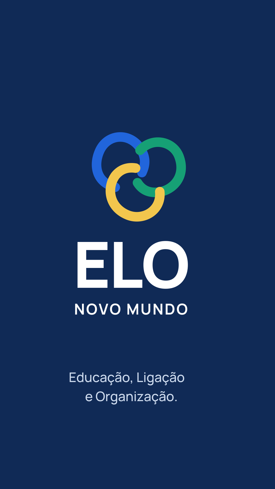
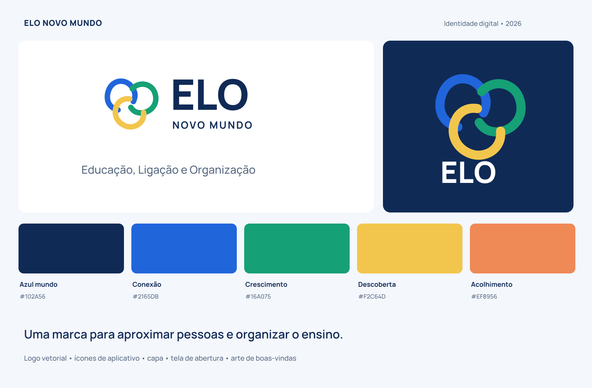

IDENTIDADE DO PRODUTO · VERSÃO 01
Boas conexões.
Novas possibilidades.
Um sistema visual que aproxima a comunidade escolar: curvas conectadas, cores vivas e uma interface organizada. As artes abaixo já acompanham o código do aplicativo.
Marca principal
Vetor com letras em contornos e PNG transparente.
SVGPNGÍcone do app
Versões em cinco tamanhos e opção maskable.
SVGPNG 512
Arte de abertura
Composição vertical pronta para adaptação.
SVGPNGBaixar arte de boas-vindas em PNG · WebP para web
SISTEMA VISUAL
Uma identidade consistente.

Como abrir o aplicativo
- Instale Node.js 22 e abra um terminal na pasta deste pacote.
- Execute
npm ci e depois npm run dev. - Abra o endereço informado no terminal. Sem Firebase configurado, entre na demonstração com dados fictícios.
- O menu Identidade visual reúne as artes; Infraestrutura e consumo concentra o monitoramento.
Para conectar dados reais, siga o guia técnico. Este pacote é um piloto e não foi implantado na sua conta.
Consultar instalação e bancos →